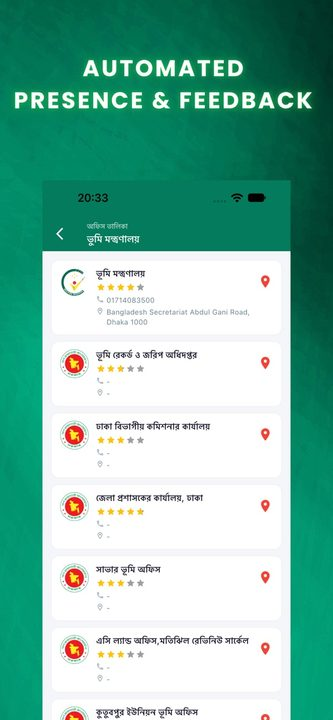
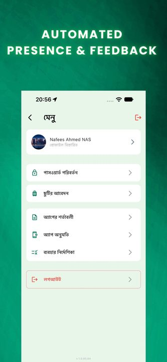
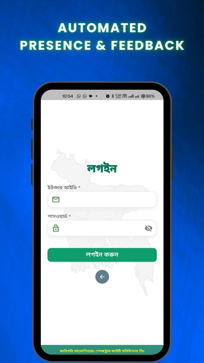

Automated Presence & Feedback
Updated
Government offices need to know who is at work, and citizens want to be heard about the service they get. Spectrum built APFS, Automated Presence and Feedback, which handles both: staff check in from their phone at the office, and people rate and comment on offices. It is now used by ministries and government offices across Bangladesh.
- Client
- Ministries, government offices and public bodies
- Sector
- Government workplaces
- What we built
- APFS: Android and iOS apps with a management system
- Live system
- Runs for each organisation that uses it
- Mobile apps
- Google Play and App Store
The problem
Attendance in many offices was kept in paper registers or on machines at the door, leave requests went around on paper, and managers had no live view of who was in.
Feedback about offices and their services was hard to collect and even harder to act on.
What we built
One system for attendance, leave and feedback, on Android and iOS:
- Check-in and check-out from the phone, confirmed by the office location and a photo. The app warns staff when they are outside the office area.
- Leave management: apply for leave, see leave balances and follow each request.
- Feedback and reporting: share suggestions, report office problems, and follow what happens to them.
- Office ratings: offices are listed with star ratings from feedback.
- Helplines and services: support directories, emergency numbers and internal service requests.
- Staff directory and office map, showing colleagues by department and the approved check-in zones.
- Live data for managers on attendance and participation, as it happens.
Where APFS is used
- Dhaka Novotheatreঢাকা নভোথিয়েটার
- Noakhali DC Officeনোয়াখালী জেলা প্রশাসকের কার্যালয়
- Ministry of Landভূমি মন্ত্রণালয়
- National Sports Council (NSC)জাতীয় ক্রীড়া পরিষদ
- Ministry of Agricultureকৃষি মন্ত্রণালয়
- BM Bhabanবিএম ভবন
The Automated Presence & Feedback app
Automated Presence & Feedback




How it works
Arrive and check in
At the office, staff check in on the app. The location and a photo confirm it.
Work and request leave
Leave requests and balances are handled in the same app.
Give feedback
Staff and visitors share feedback and rate the office.
Managers see it live
Attendance and feedback appear as they happen, ready for reports.
Results
- 6Government bodies using it
- 2Apps: Android and iOS
- Location + photoFor every check-in
- Used by six government bodies, including the Ministry of Land and the Ministry of Agriculture.
- Attendance is recorded with location and photo, so it cannot simply be marked for someone else.
- Leave and feedback no longer depend on paper.
- Managers see attendance and feedback as they happen.
The technology, in plain words
- Location check: check-in works only inside the approved office zone.
- Photo confirmation: a photo is taken with each check-in.
- Android and iOS apps: published on Google Play and the App Store.
- Bangla interface: designed for government staff across Bangladesh.
Want to know more about the technology? Read our guides on All Services and Our Mobile Apps.